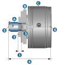

Main spindle / counter spindle
Define the Coordinate system and the Clamping setup for turning with main and counter spindle.
Main spindle / counter spindle
Define a Name and, if necessary, a Comment to uniquely describe the main spindle / counter spindle.
LCS
|
Define a local coordinate system (LCS) or select a previously defined zero point to determine the position of the main spindle / counter spindle. |
The alignment of the zero points must correspond to that of the selected machine.
Clamping setup main spindle
Reach: (1) Define the tool reach of the component on the main spindle. To do this, select two points.
Select jaw front (2) as the first point. Select a point on the surface of the front side of the part (3) as the second point (Pick parts front point).
Clamping position Z: (4) Define the clamping position of the part in the Z direction. To do this, select the contact point,that is the point on the contact surface of the spindle on the machine (5) (Select contact point).
A) Component, (B) Main spindle clamping jaws, (C) Main spindle housing
Clamping setup counter spindle
Stickin length: (1) Define the clamping depth of the component on the counter spindle. To do this, select two points.
Select jaw front (2) as the first point. Select a point on the surface of the front side of the part (3) as the second point (Pick parts front point).
Clamping position Z: (4) Define the clamping position of the part in the Z direction. To do this, select the contact point, that is the point on the contact surface of the spindle on the machine (6) (Select contact point).
A) Component, (B) Counter spindle clamping jaws, (C) Counter spindle housing
|  |
Turningjobs frame
A standard frame for turning operations is created and displayed here when creating a Counterspindle subjob list.
|
Click the icon to edit the frame. It is not possible to select another frame here. If this is required, in the job definition, go to the Tool dialog page and select the appropriate frame in the Frame area. |